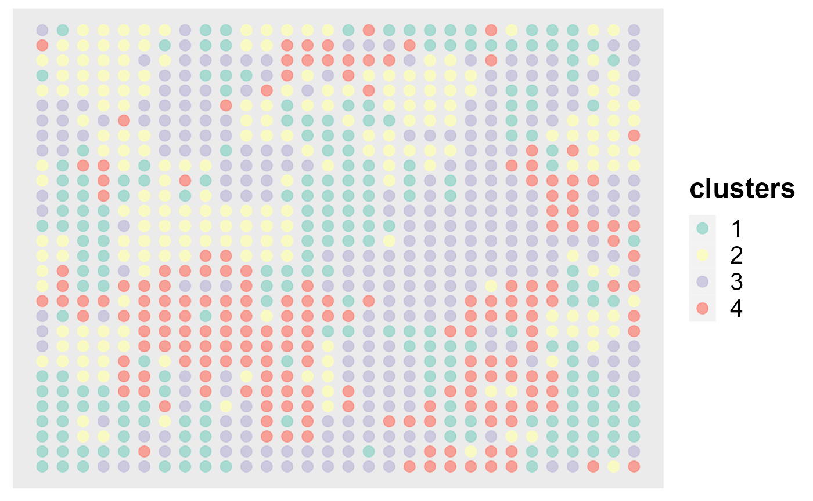
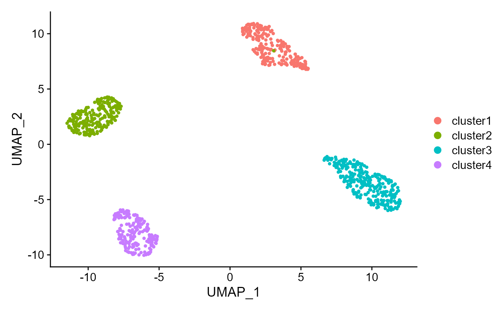
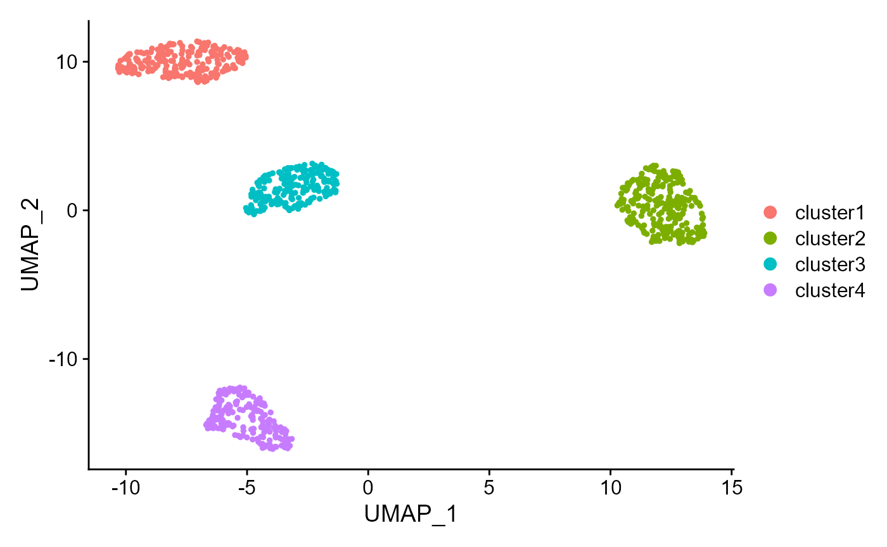
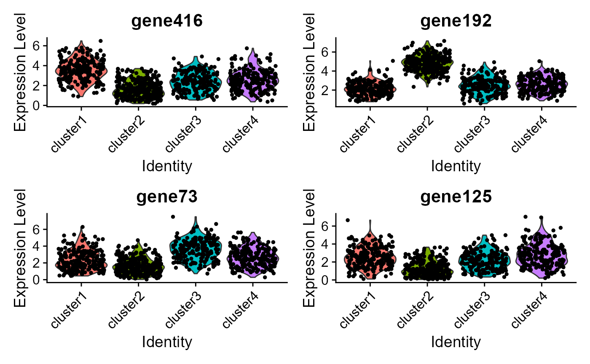
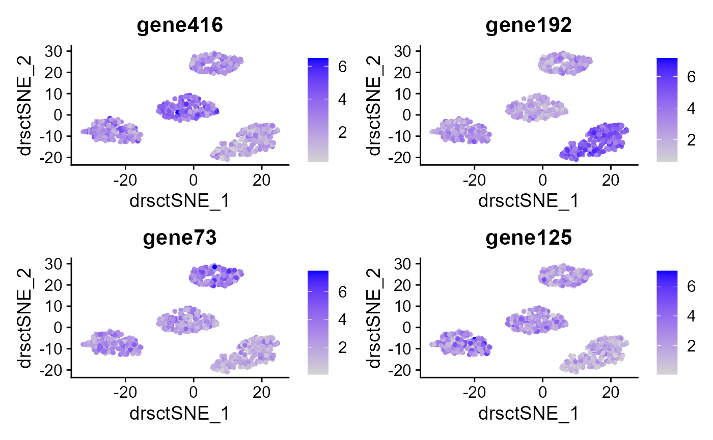

DR-SC: simulation
Wei Liu
2022-07-31
DR.SC.Simu.RmdGenerate the simulated data
First, we generate the spatial transcriptomics data with lattice neighborhood, i.e. ST platform by using the function gendata_RNAExp in DR.SC package, which is a Seurat object format. It is noted that the meta.data must include spatial coordinates in columns named “row” (x coordinates) and “col” (y coordinates)!
library(DR.SC)
#> Loading required package: parallel
#> Loading required package: spatstat.geom
#> Warning: package 'spatstat.geom' was built under R version 4.1.3
#> Loading required package: spatstat.data
#> Warning: package 'spatstat.data' was built under R version 4.1.3
#> spatstat.geom 2.4-0
#> DR.SC : Joint dimension reduction and spatial clustering is conducted for
#> Single-cell RNA sequencing and spatial transcriptomics data, and more details can be referred to
#> Wei Liu, Xu Liao, Yi Yang, Huazhen Lin, Joe Yeong, Xiang Zhou, Xingjie Shi and Jin Liu. (2022) <doi:10.1093/nar/gkac219>. It is not only computationally efficient and scalable to the sample size increment, but also is capable of choosing the smoothness parameter and the number of clusters as well.
seu <- gendata_RNAExp(height=30, width=30,p=500, K=4)
head(seu@meta.data)
#> orig.ident nCount_RNA nFeature_RNA row col imagerow imagecol
#> spot1 SeuratProject 2363525 500 1 1 1 1
#> spot2 SeuratProject 2953614 500 2 1 2 1
#> spot3 SeuratProject 2595803 500 3 1 3 1
#> spot4 SeuratProject 4222306 500 4 1 4 1
#> spot5 SeuratProject 3861722 500 5 1 5 1
#> spot6 SeuratProject 5614859 500 6 1 6 1
#> true_clusters
#> spot1 1
#> spot2 1
#> spot3 1
#> spot4 4
#> spot5 4
#> spot6 4Fit DR-SC using simulated data
Data preprocessing
This preprocessing includes Log-normalization and feature selection. Here we select highly variable genes for example first. The selected genes’ names are saved in “seu@assays$RNA@var.features”
### Given K
library(Seurat)
#> Warning: package 'Seurat' was built under R version 4.1.3
#> Attaching SeuratObject
#> Attaching sp
seu <- NormalizeData(seu)
# choose highly variable features using Seurat
seu <- FindVariableFeatures(seu, nfeatures = 400)Fit DR-SC based on highly variable genes(HVGs)
For function DR.SC, users can specify the number of clusters \(K\) or set K to be an integer vector by using modified BIC(MBIC) to determine \(K\). First, we try using user-specified number of clusters. Then we show the version chosen by MBIC.
### Given K
seu2 <- DR.SC(seu, K=4, platform = 'ST', verbose=F)
#> Neighbors were identified for 900 out of 900 spots.
#> Fit DR-SC model...
#> Finish DR-SC model fittingAfter finishing model fitting, we use ajusted rand index (ARI) to check the performance of clustering
mclust::adjustedRandIndex(seu2$spatial.drsc.cluster, seu$true_clusters)
#> [1] 1Next, we show the application of DR-SC in visualization. First, we can visualize the clusters from DR-SC on the spatial coordinates.
spatialPlotClusters(seu2)
We can also visualize the clusters from DR-SC on the two-dimensional tSNE based on the extracted features from DR-SC.
drscPlot(seu2) Show the UMAP plot based on the extracted features from DR-SC.
Show the UMAP plot based on the extracted features from DR-SC.
drscPlot(seu2, visu.method = 'UMAP')
#> Warning: The default method for RunUMAP has changed from calling Python UMAP via reticulate to the R-native UWOT using the cosine metric
#> To use Python UMAP via reticulate, set umap.method to 'umap-learn' and metric to 'correlation'
#> This message will be shown once per session
#> Warning: Invalid name supplied, making object name syntactically valid. New
#> object name is RunUMAP.RNA.dr.sc; see ?make.names for more details on syntax
#> validity
Use MBIC to choose number of clusters:
seu2 <- DR.SC(seu, q=10, K=2:6, platform = 'ST', verbose=F)
#> Neighbors were identified for 900 out of 900 spots.
#> Fit DR-SC model...
#> Starting parallel computing intial values...
#> Finish DR-SC model fitting
mbicPlot(seu2)
Fit DR-SC based on spatially variable genes(SVGs)
First, we select the spatilly variable genes using funciton FindSVGs.
### Given K
seu <- NormalizeData(seu, verbose=F)
# choose 400 spatially variable features using FindSVGs
seus <- FindSVGs(seu, nfeatures = 400, verbose = F)
seu2 <- DR.SC(seus, K=4, platform = 'ST', verbose=F)
#> Neighbors were identified for 900 out of 900 spots.
#> Fit DR-SC model...
#> Finish DR-SC model fittingUsing ARI to check the performance of clustering
mclust::adjustedRandIndex(seu2$spatial.drsc.cluster, seu$true_clusters)
#> [1] 0.9971493DR-SC can enhance visualization
Show the spatial scatter plot for clusters
spatialPlotClusters(seu2)
Show the tSNE plot based on the extracted features from DR-SC.
drscPlot(seu2) Show the UMAP plot based on the extracted features from DR-SC.
Show the UMAP plot based on the extracted features from DR-SC.
drscPlot(seu2, visu.method = 'UMAP')
#> Warning: Invalid name supplied, making object name syntactically valid. New
#> object name is RunUMAP.RNA.dr.sc; see ?make.names for more details on syntax
#> validity
DR-SC can automatically determine the number of clusters
Use MBIC to choose number of clusters:
seu2 <- DR.SC(seus, q=10, K=2:6, platform = 'ST', verbose=F)
#> Neighbors were identified for 900 out of 900 spots.
#> Fit DR-SC model...
#> Starting parallel computing intial values...
#> Finish DR-SC model fitting
mbicPlot(seu2)
# or plot BIC or AIC
# mbicPlot(seu2, criteria = 'BIC')
# mbicPlot(seu2, criteria = 'AIC')
# tune pen.const
seu2 <- selectModel(seu2, pen.const = 0.7)
mbicPlot(seu2)DR-SC can help differentially expression analysis
Conduct visualization of marker gene expression. ### Ridge plots Visualize single cell expression distributions in each cluster from Seruat.
dat <- FindAllMarkers(seu2)
#> Calculating cluster cluster1
#> Calculating cluster cluster2
#> Calculating cluster cluster3
#> Calculating cluster cluster4
suppressPackageStartupMessages(library(dplyr) )
#> Warning: package 'dplyr' was built under R version 4.1.3
# Find the top 1 marker genes, user can change n to access more marker genes
dat %>%group_by(cluster) %>%
top_n(n = 1, wt = avg_log2FC) -> top
genes <- top$gene
RidgePlot(seu2, features = genes, ncol = 2)
#> Picking joint bandwidth of 0.297
#> Picking joint bandwidth of 0.242
#> Picking joint bandwidth of 0.335
#> Picking joint bandwidth of 0.322### Violin plot Visualize single cell expression distributions in each cluster
VlnPlot(seu2, features = genes, ncol=2) ### Feature plot We extract tSNE based on the features from DR-SC and then visualize feature expression in the low-dimensional space
seu2 <- RunTSNE(seu2, reduction="dr-sc", reduction.key='drsctSNE_')
FeaturePlot(seu2, features = genes, reduction = 'tsne' ,ncol=2)
Dot plots
The size of the dot corresponds to the percentage of cells expressing the feature in each cluster. The color represents the average expression level
DotPlot(seu2, features = genes)
#> Warning: Scaling data with a low number of groups may produce misleading resultsHeatmap plot
Single cell heatmap of feature expression
# standard scaling (no regression)
dat %>%group_by(cluster) %>%
top_n(n = 30, wt = avg_log2FC) -> top
### select the marker genes that are also the variable genes.
genes <- intersect(top$gene, seu2[['RNA']]@var.features)
## Change the HVGs to SVGs
# <- topSVGs(seu2, 400)
seu2 <- ScaleData(seu2, verbose = F)
DoHeatmap(subset(seu2, downsample = 500),features = genes, size = 5)Session information
sessionInfo()
#> R version 4.1.2 (2021-11-01)
#> Platform: x86_64-w64-mingw32/x64 (64-bit)
#> Running under: Windows 10 x64 (build 22000)
#>
#> Matrix products: default
#>
#> locale:
#> [1] LC_COLLATE=English_Singapore.1252 LC_CTYPE=English_Singapore.1252
#> [3] LC_MONETARY=English_Singapore.1252 LC_NUMERIC=C
#> [5] LC_TIME=English_Singapore.1252
#> system code page: 936
#>
#> attached base packages:
#> [1] parallel stats graphics grDevices utils datasets methods
#> [8] base
#>
#> other attached packages:
#> [1] dplyr_1.0.9 sp_1.5-0 SeuratObject_4.1.0
#> [4] Seurat_4.1.1 DR.SC_2.9 spatstat.geom_2.4-0
#> [7] spatstat.data_2.2-0
#>
#> loaded via a namespace (and not attached):
#> [1] GiRaF_1.0.1 systemfonts_1.0.4 plyr_1.8.7
#> [4] igraph_1.3.2 lazyeval_0.2.2 splines_4.1.2
#> [7] listenv_0.8.0 scattermore_0.8 ggplot2_3.3.6
#> [10] digest_0.6.29 htmltools_0.5.2 fansi_1.0.3
#> [13] magrittr_2.0.3 memoise_2.0.1 tensor_1.5
#> [16] cluster_2.1.2 ROCR_1.0-11 limma_3.50.1
#> [19] globals_0.15.0 matrixStats_0.62.0 pkgdown_2.0.2
#> [22] spatstat.sparse_2.1-1 colorspace_2.0-3 ggrepel_0.9.1
#> [25] textshaping_0.3.6 xfun_0.29 crayon_1.5.1
#> [28] jsonlite_1.8.0 progressr_0.10.1 survival_3.2-13
#> [31] zoo_1.8-10 glue_1.6.2 polyclip_1.10-0
#> [34] gtable_0.3.0 leiden_0.4.2 future.apply_1.9.0
#> [37] BiocGenerics_0.40.0 abind_1.4-5 scales_1.2.0
#> [40] DBI_1.1.2 spatstat.random_2.2-0 miniUI_0.1.1.1
#> [43] Rcpp_1.0.8.3 viridisLite_0.4.0 xtable_1.8-4
#> [46] reticulate_1.25 spatstat.core_2.4-4 mclust_5.4.10
#> [49] stats4_4.1.2 htmlwidgets_1.5.4 httr_1.4.3
#> [52] RColorBrewer_1.1-3 ellipsis_0.3.2 ica_1.0-2
#> [55] pkgconfig_2.0.3 farver_2.1.0 sass_0.4.1
#> [58] uwot_0.1.11 deldir_1.0-6 utf8_1.2.2
#> [61] tidyselect_1.1.2 labeling_0.4.2 rlang_1.0.2
#> [64] reshape2_1.4.4 later_1.3.0 munsell_0.5.0
#> [67] tools_4.1.2 cachem_1.0.6 cli_3.2.0
#> [70] generics_0.1.2 ggridges_0.5.3 evaluate_0.15
#> [73] stringr_1.4.0 fastmap_1.1.0 yaml_2.3.5
#> [76] ragg_1.2.2 goftest_1.2-3 knitr_1.37
#> [79] fs_1.5.2 fitdistrplus_1.1-8 purrr_0.3.4
#> [82] RANN_2.6.1 pbapply_1.5-0 future_1.26.1
#> [85] nlme_3.1-155 mime_0.12 ggrastr_1.0.1
#> [88] compiler_4.1.2 rstudioapi_0.13 beeswarm_0.4.0
#> [91] plotly_4.10.0 png_0.1-7 spatstat.utils_2.3-1
#> [94] tibble_3.1.7 bslib_0.3.1 stringi_1.7.6
#> [97] highr_0.9 desc_1.4.0 rgeos_0.5-9
#> [100] lattice_0.20-45 Matrix_1.4-0 vctrs_0.4.1
#> [103] CompQuadForm_1.4.3 pillar_1.7.0 lifecycle_1.0.1
#> [106] lmtest_0.9-40 jquerylib_0.1.4 RcppAnnoy_0.0.19
#> [109] data.table_1.14.2 cowplot_1.1.1 irlba_2.3.5
#> [112] httpuv_1.6.5 patchwork_1.1.1 R6_2.5.1
#> [115] promises_1.2.0.1 KernSmooth_2.23-20 gridExtra_2.3
#> [118] vipor_0.4.5 parallelly_1.32.0 codetools_0.2-18
#> [121] MASS_7.3-55 assertthat_0.2.1 rprojroot_2.0.3
#> [124] withr_2.5.0 sctransform_0.3.3 S4Vectors_0.32.3
#> [127] mgcv_1.8-39 grid_4.1.2 rpart_4.1.16
#> [130] tidyr_1.2.0 rmarkdown_2.11 Rtsne_0.16
#> [133] shiny_1.7.1 ggbeeswarm_0.6.0